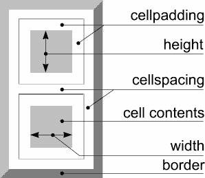

| Таблицы - граница |
|
|
|
|
начало продолжение размер цвета < границы > выравнивание вложение навигация быстрый обзор теги заключение |
Теперь давайте поближе взглянем на обрамление таблицы. Вы уже знаете, что видимость обрамления определяется атрибутом BORDER тега TABLE. При значении равном нулю, обрамление становится невидимым. Значения больше нуля влияют лишь на ширину внешней рамки.
<TABLE BORDER="10">
Промежутки между ячейками определяются атрибутом CELLSPACING тега TABLE. По умолчанию устанавливается промежуток 3 пикселя, но вы можете придать ему любое значение. Впрочем, зачастую вам вообще не понадобятся промежутки между ячейками, как, например, на этой странице. В таком случае установите промежутки, равные нулю.
<TABLE BORDER="1" CELLSPACING="10">
Существует также некоторое пространство между содержимым ячейки и ее границей. Оно просто не дает содержимомиу ячеки наползать на ее края. По умолчанию это значение равно 2 пикселям. Изменить его можно с помощью атрибута CELLPADDING тега TABLE. Значение равное нулю удаляет свободное пространство между содержимым ячейки и ее границами.
<TABLE BORDER="1" CELLPADDING="10">
При разработке web страниц, вам часто придется устанавливать значение этих атрибутов в ноль. Это даст вам более жесткий контроль над размером таблиц и ячеек. Если этого не сделать, разные браузеры добавят по умолчанию различные значения этих атрибутов, что может привести к изменению вида страницы.
 |
 |
|